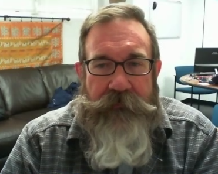
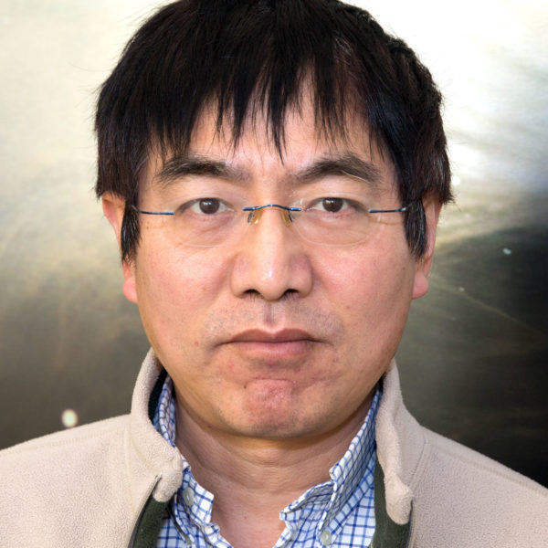

Extragalactic
Rob Kennicut
 Rob Kennicutt's research focuses on galaxy formation and evolution. He has studied relationships between star formation rate and other physical properties in galaxies. He extended the Schmidt Law — relating star formation rate to the local gas surface density — to observations of Hα and constrained the law on nearby galaxies. He is also currently faculty at the University of Arizona. He has previously served as Director of the Institute of Astronomy at the University of Cambridge and Editor-in-Chief of The Astrophysical Journal. Recently, he was co-chair of the Astro2020 Decadal Survey.
Rob Kennicutt's research focuses on galaxy formation and evolution. He has studied relationships between star formation rate and other physical properties in galaxies. He extended the Schmidt Law — relating star formation rate to the local gas surface density — to observations of Hα and constrained the law on nearby galaxies. He is also currently faculty at the University of Arizona. He has previously served as Director of the Institute of Astronomy at the University of Cambridge and Editor-in-Chief of The Astrophysical Journal. Recently, he was co-chair of the Astro2020 Decadal Survey.
Casey Papovich
Casey Papovich researches observational cosmology, galaxy evolution and formation, testing feedback in galaxy evolution, and large-scale galaxy structure. Some of his work has focused on high-redshift studies, including determining the properties of the first galaxies and constraining the epoch of reionization. He is a project scientist for GMACS, an instrument being designed for the Giant Magellan Telescope. He is also co-investigator on the CEERS Early Release Science program on the James Webb Space Telescope.
Jonelle Walsh
Jonelle Walsh studies supermassive black holes in nearby galaxies, using dynamical black hole mass measurements based on observations of stars or gas. Her research focuses on investigating the scaling relations between black holes and properties of their host galaxies, to understand how they grow and co-evolve. She studies black holes in a population of local compact relic galaxies that may provide clues about the scaling relations at higher redshifts. She is also Principal Investigator of a large and Long program on Gemini NIFS to detect and measure black hole masses in galaxies that are poorly-represented in the scaling relations.
Instrumentation
Darren DePoy
Darren DePoy is the head of the Munnerlyn Astronomical Instrumentation Lab and builds instruments for ground-based telescopes. He is the Project Scientist for the Dark Energy Camera for the Dark Energy Survey. He is also the Associate Dean for Research in the Texas A&M College of Science.
Jennifer Marshall
Jen Marshall builds astronomical instruments in the Munnerlyn Astronomical Instrumentation Lab. She leads the instrumentation group in various collaborations, including the Dark Energy Survey and HETDEX. She is the co-Principal Investigator of GMACS, a spectrograph being developed for the Giant Magellan Telescope.
Milky Way
Jennifer Marshall
In addition to instrumentation, Jen Marshall works on near-field cosmology, including studies of metal-poor stars in the Milky Way halo, to understand the formation of the Milky Way. She has also worked on the Dark Energy Survey. She is also Project Scientist for the Manuakea Spectroscopic Explorer.
Louis Strigari
 Louis Strigari studies astroparticle physics and cosmology, particularly neutrinos and dark matter. His work includes dark matter theory, near-field cosmology, dark energy, and the standard model of particle physics and search for new particles. His research includes neutrino interactions and both direct and inderict detections of dark matter. He is interested in high energy gamme-ray astrophysics, and he is also a member of the Dark Energy Survey, studying the Local Group and Milky Way satellite galaxies. He works on cosmological simulations to study dark matter and satellite galaxies.
Louis Strigari studies astroparticle physics and cosmology, particularly neutrinos and dark matter. His work includes dark matter theory, near-field cosmology, dark energy, and the standard model of particle physics and search for new particles. His research includes neutrino interactions and both direct and inderict detections of dark matter. He is interested in high energy gamme-ray astrophysics, and he is also a member of the Dark Energy Survey, studying the Local Group and Milky Way satellite galaxies. He works on cosmological simulations to study dark matter and satellite galaxies.
Supernovae/Distance Ladder
Kevin Krisciunas
Kevin Krisciunas studies supernovae. Someone please expand
Lucas Macri
Lucas Macri's research focuses on the extragalactic distance scale, time-series observations, and near-field cosmology. He studies Cepheid and Mira variables in order to constrain the rate of expansion of the Universe. He also works on obtaining redshifts in 2MASS, in order to determine the large-scale structure of the local Universe. He is also the Associate Dean for Undergraduate Programs in the College of Science at Texas A&M University.
Nicholas Suntzeff
Nicholas Suntzeff researches cosmology, supernovae, galaxy evolution, large-scale structure, stellar populations, and instrumentation. He co-founded the High-Z Supernova Team with Dr. Brian Schmidt, and in 1998, the Team discovered the acceleration of the expansion of the Universe and the presence of dark energy. He also co-founded the Calan/Tololo Supernova Survey, which determined that Type 1a supernovae are the most precise cosmological distance markers. He has also served as the Associate Director for Science for the National Optical Astronomy Observatory.
Lifan Wang
Lifan Wang studies supernovae, focusing on near-field cosmology and the cosmic distance scale. He works on spectropolarimetry observations of supernovae, to study the geometric structures of supernovae. He also works on observing supernovae at high redshifts (z>4), and he is working on building an astronomical observatory in Antarctica to study dark energy.